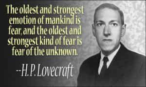
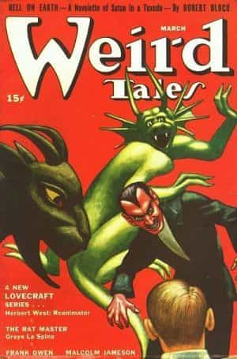

Quintus can be found at qcurtius.com. He is the author of the books On Duties, Thirty Seven, Sallust: The Conspiracy Of Catiline And The War Of Jugurtha, and other books. His work has been reviewed at Taki's Magazine. He can be followed on Twitter


H.P. Lovecraft is now recognized as perhaps the most influential horror writer of the twentieth century. Yet this recognition was a long time in coming. During his life he labored away in near complete obscurity, his work appearing only in obscure pulp horror magazines, to be consumed by only the most ardent fans of the genre. His death at the age of 46 was nearly unnoticed; but his devoted fans kept alive the spirit of his works, and he would eventually be recognized as a titan of horror.
A psychologist reviewing the facts of his early life would find fertile ground for analysis. He was born in Rhode Island in 1890, the son of parents who could trace their ancestry in New England back to the colonial era. Yet this genealogy had seen better days; the family was not poor, but neither were they especially well-heeled. Mental illness seems to have hovered over the household, and this likely formed the source of Lovecraft’s later fascination with decadence, decay, and insanity. His father was confined to a mental institution in 1893 for an apparent psychotic breakdown.
The boy found escape in reading and the delights of imaginative thought. He showed a budding literary ability from an early age, but he seems to have been developmentally crippled by his overbearing and domineering mother, who never encouraged him to take risks.
Youthful illnesses did little to help the situation, providing his mother with excuses to keep him firmly under her control. A series of family and personal problems meant he never officially graduated from high school: his mother suffered chronic shortages of money, and he himself endured an unspecified nervous breakdown in 1908. His mother was eventually committed to a mental institution in 1919. It is not difficult to understand the later preoccupations with madness and decay that appear in his stories.

In appearance he was pale, gaunt, and socially awkward. Yet in his mind were growing ideas that would revolutionize not just horror fiction, but fiction as a whole. His first story was published in 1916, and this would be followed by years of submissions to pulp horror magazines.
His first efforts were somewhat derivative, and little more than imitations of Poe. But gradually he would find his own distinctive voice. It is not a simple matter to describe H.P. Lovecraft to those unfamiliar with his work; but there are certain recurring themes. These are: ancient evils lurking below the surfaces of things; decay and ruin hovering over old New England towns; ancient extraterrestrial beings hidden in obscure parts of the world; and the idea that humanity is utterly insignificant when placed against the vast cosmic forces arrayed against him.
In a letter written to the editor of Weird Tales magazine in 1927, Lovecraft described how he saw his writing:
Now all my tales are based on the fundamental premise that common human laws and interests and emotions have no validity or significance in the vast cosmos-at-large…To achieve the essence of real externality, whether of time or space or dimension, one must forget that such things as organic life, good and evil, love and hate, and all such local attributes of a negligent and temporary race called mankind, have any existence at all.
With a succession of brilliantly imaginative tales that mixed horror, science fiction, and fantasy (e.g., “The Call of Cthulhu,” “The Colour Out of Space,” “The Dunwich Horror,” “The Shadow Out of Time”), Lovecraft created a weird cosmology that had its own logic and followed its own laws. Central to this mythos was the idea that a race of monstrous extraterrestrial beings had once visited the Earth and ruled over it in remote antiquity. Eventually, this race would return to bring the world once again under its sway.
Lovecraft had a distinctive style that cannot be mistaken for anyone else. Proud of his old New England heritage, he made a point of using British archaisms in spelling (even going so far as to prefer “publick” to “public”). His language was frequently florid (“eldritch” was a favorite word); but it could be argued that his style was suitable for the atmosphere of horror that he sought to create. Many of his stories featured frenzied narrators (with whom the reader was meant to identify) who find themselves bewildered by the events transpiring around them. The horrific “payoff” would always come at the very end of the tale, when the narrator (and reader) would be hit with some shocking revelation. The technique is a time-tested one, and it works.

Lovecraft’s adult life was as dogged by tragedy as was his youth. He married a reasonably wealthy divorcee named in 1924 named Sonia Greene, and the couple moved to New York City. He continued his literary activities, but was never able to achieve financial security with writing. Perhaps as result of his childhood traumas, he lacked the discipline and willpower to promote his work as much as he could have. During his life only one book of his fiction was published, and even this was a very limited printing. But he was generous and kind, frequently corresponding with many young writers and offering them valuable suggestions on how to improve their skills.
His final years were characterized by financial decline and isolation. In the early 1930s he was divorced, a fact that cut off his primary means of support. A small inheritance from his mother was also gradually depleted; unable or unwilling to take up any other work besides writing, he became increasingly pressed by hardships. He developed intestinal cancer in 1937 and died that same year. The literary world took no notice of his death, just as the death of Herman Melville had had been ignored.
It was his readers who kept his memory alive. Despite his complete obscurity outside of the horror fiction “community,” he had earned a devoted cadre of admirers. They understood the literary merit of his work and constantly promoted it by republishing his stories or imitating his distinctive themes.
In Lovecraft’s day, literary critics did not believe that horror fiction could be a serious vehicle of literary expression; but as the decades passed, this view would change. It is now recognized that Lovecraft was an extremely influential voice who was, perhaps, so far ahead of his time that his contemporaries lost sight of him. Stephen King has called him the greatest horror writer of the twentieth century; even French writer Michel Houellebecq wrote a book of literary criticism about him.
The best way to experience Lovecraft is to buy a collection of his tales and read them. Savor the weird imagery, the fantastic sounding names (“Yog-Sothoth,” “Cthulhu,” etc.), and the oppressive sense of dread. And remember that despite his crossed and unhappy life, Lovecraft found his own way to use his literary talents to transcend his limitations and his environment, and achieve immortality. He found liberation in horror, and his sufferings were redeemed by his art.
Read More: The Genesis Of Dracula